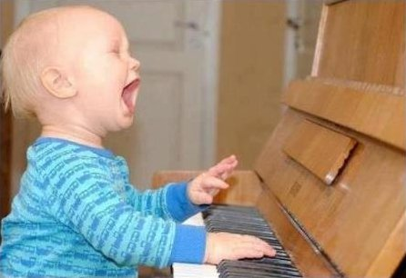

Musik
Musik og tekst er skrevet 2009 - 2015 af
Lasse Steen Bohnstedt.
Visse rettigheder forbeholdt. *)
Hjemmelavede sange og oversættelser af engelske sange.
Her er sange både for
børn og
voksne.
|

Hjemmelavede sangeTekst og musik af mig.Så har jeg fået lagt alt det op igen, som cwahi.net slettede i sin tid. Plus lidt mere. Klik her for at se listen. Jeg har netop frigivet beta 5 af "Loke". En anden frigivet sang er "Judas", beta 1. Jeg har masser andre sange undervejs, men ingenting der er klar til andres øjne... |
OversættelserTekst af mig. Musik og originaltekst af andre.Jeg har sidst frigivet beta 2 af "Mere". Desuden har jeg indspillet "Abemand" for meget længe siden; det er en "quick 'n' dirty" udgave, som tog cirka 4 timer at indspille og mixe - så tag det for hvad det er ;-)
|
2015-06-23
Værkerne